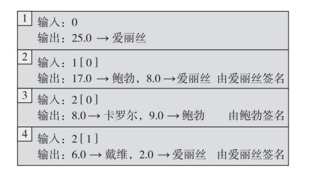
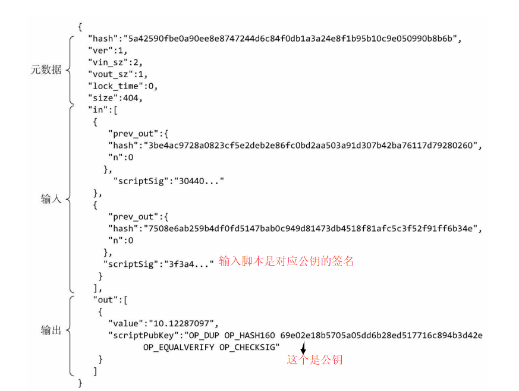

<!DOCTYPE html>
<html>
<head><meta name="generator" content="Hexo 3.9.0">
  <meta charset="utf-8">
  

  
  <title>《区块链：技术驱动金融》-比特币运行机制 | Hexo</title>
  <meta name="viewport" content="width=device-width, initial-scale=1, maximum-scale=1">
  <meta name="description" content="3.1比特币的交易这种交易账本的记账方式需要考虑的几个问题：   地址转换：上比特币就像财奴币中描述的币一样，一个交易中输出的币，要么在另一个交易中被完全消费掉，要么就一个都不被消费，不存在只消费部分的情况。爱丽丝只需付给鲍勃17个币，但爱丽丝在上一交易中实际获得了25个币，为了把这些币全部消费掉，她必须再转给自己8个币。这8个币可以转到另外一个地址（不同于交易1中获得25个币的地址），但前提是该">
<meta name="keywords" content="blockchain">
<meta property="og:type" content="article">
<meta property="og:title" content="《区块链：技术驱动金融》-比特币运行机制">
<meta property="og:url" content="http://yoursite.com/2019/09/13/区块链/区块链：技术驱动金融/《区块链：技术驱动金融》-比特币运行机制/index.html">
<meta property="og:site_name" content="Hexo">
<meta property="og:description" content="3.1比特币的交易这种交易账本的记账方式需要考虑的几个问题：   地址转换：上比特币就像财奴币中描述的币一样，一个交易中输出的币，要么在另一个交易中被完全消费掉，要么就一个都不被消费，不存在只消费部分的情况。爱丽丝只需付给鲍勃17个币，但爱丽丝在上一交易中实际获得了25个币，为了把这些币全部消费掉，她必须再转给自己8个币。这8个币可以转到另外一个地址（不同于交易1中获得25个币的地址），但前提是该">
<meta property="og:locale" content="en">
<meta property="og:image" content="http://yoursite.com/2019/09/13/区块链/区块链：技术驱动金融/《区块链：技术驱动金融》-比特币运行机制/bitcointrans.png">
<meta property="og:image" content="http://yoursite.com/2019/09/13/区块链/区块链：技术驱动金融/《区块链：技术驱动金融》-比特币运行机制/bitcoin_trans_program.png">
<meta property="og:updated_time" content="2019-03-03T13:15:20.000Z">
<meta name="twitter:card" content="summary">
<meta name="twitter:title" content="《区块链：技术驱动金融》-比特币运行机制">
<meta name="twitter:description" content="3.1比特币的交易这种交易账本的记账方式需要考虑的几个问题：   地址转换：上比特币就像财奴币中描述的币一样，一个交易中输出的币，要么在另一个交易中被完全消费掉，要么就一个都不被消费，不存在只消费部分的情况。爱丽丝只需付给鲍勃17个币，但爱丽丝在上一交易中实际获得了25个币，为了把这些币全部消费掉，她必须再转给自己8个币。这8个币可以转到另外一个地址（不同于交易1中获得25个币的地址），但前提是该">
<meta name="twitter:image" content="http://yoursite.com/2019/09/13/区块链/区块链：技术驱动金融/《区块链：技术驱动金融》-比特币运行机制/bitcointrans.png">
  
    <link rel="alternate" href="/atom.xml" title="Hexo" type="application/atom+xml">
  
  
    <link rel="icon" href="/favicon.png">
  
  
    <link href="//fonts.googleapis.com/css?family=Source+Code+Pro" rel="stylesheet" type="text/css">
  
  <link rel="stylesheet" href="/css/style.css">
</head>
</html>
<body>
  <div id="container">
    <div id="wrap">
      <header id="header">
  <div id="banner"></div>
  <div id="header-outer" class="outer">
    <div id="header-title" class="inner">
      <h1 id="logo-wrap">
        <a href="/" id="logo">Hexo</a>
      </h1>
      
    </div>
    <div id="header-inner" class="inner">
      <nav id="main-nav">
        <a id="main-nav-toggle" class="nav-icon"></a>
        
          <a class="main-nav-link" href="/">Home</a>
        
          <a class="main-nav-link" href="/archives">Archives</a>
        
      </nav>
      <nav id="sub-nav">
        
          <a id="nav-rss-link" class="nav-icon" href="/atom.xml" title="RSS Feed"></a>
        
        <a id="nav-search-btn" class="nav-icon" title="Search"></a>
      </nav>
      <div id="search-form-wrap">
        <form action="//google.com/search" method="get" accept-charset="UTF-8" class="search-form"><input type="search" name="q" class="search-form-input" placeholder="Search"><button type="submit" class="search-form-submit">&#xF002;</button><input type="hidden" name="sitesearch" value="http://yoursite.com"></form>
      </div>
    </div>
  </div>
</header>
      <div class="outer">
        <section id="main"><article id="post-区块链/区块链：技术驱动金融/《区块链：技术驱动金融》-比特币运行机制" class="article article-type-post" itemscope itemprop="blogPost">
  <div class="article-meta">
    <a href="/2019/09/13/区块链/区块链：技术驱动金融/《区块链：技术驱动金融》-比特币运行机制/" class="article-date">
  <time datetime="2019-09-13T04:49:56.000Z" itemprop="datePublished">2019-09-13</time>
</a>
    
  <div class="article-category">
    <a class="article-category-link" href="/categories/区块链/">区块链</a>
  </div>

  </div>
  <div class="article-inner">
    
    
      <header class="article-header">
        
  
    <h1 class="article-title" itemprop="name">
      《区块链：技术驱动金融》-比特币运行机制
    </h1>
  

      </header>
    
    <div class="article-entry" itemprop="articleBody">
      
        <h1 id="3-1比特币的交易"><a href="#3-1比特币的交易" class="headerlink" title="3.1比特币的交易"></a>3.1比特币的交易</h1><p><br>这种交易账本的记账方式需要考虑的几个问题：</p>
<blockquote>
<ol>
<li>地址转换：上比特币就像财奴币中描述的币一样，一个交易中输出的币，要么在另一个交易中被完全消费掉，要么就一个都不被消费，不存在只消费部分的情况。爱丽丝只需付给鲍勃17个币，但爱丽丝在上一交易中实际获得了25个币，为了把这些币全部消费掉，她必须再转给自己8个币。这8个币可以转到另外一个地址（不同于交易1中获得25个币的地址），但前提是该地址为爱丽丝所有，这就叫地址转换。</li>
<li>有效验证：当一个新的交易被加入总账，它的有效性是否容易被验证？在这个例子里，我们要核查一下爱丽丝引用的交易输出，确认她确实有25个币没有被花费掉。因为我们使用了哈希指针，所以核查很快。为了确认这25个币没有被花掉，我们只需从爱丽丝所引用的交易开始，一直核查到账本上最新记录的交易为止即可——而不需要从账本建立之初的交易开始核查。而且，这种方法也不需要增加额外的数据结构（当然，我们将会看到，加入新的数据结构将进一步提高速度）。</li>
<li>资金合并。和财奴币一样，比特币交易可能有许多输入与输出，资金分隔与合并也很容易。假如鲍勃在两笔不同的交易中分别收到17个币和2个币，现在他想把这两笔钱合并起来花掉，这很容易，他只需发起一个交易，交易里有两个输入和一个输出，输出的地址是他自己的地址，这样，鲍勃就把两个交易合二为一了。</li>
<li>共同支付。同样地，共同支付也很容易做到。如果卡罗尔和鲍勃想要共同支付给戴维，他们可以发起一个交易，交易里也有两个输入和一个输出，唯一不同在于，两个输入所引用的“上一笔交易”的输出地址不同，因此，这笔交易需要两个签名：卡罗尔的和鲍勃的。</li>
</ol>
</blockquote>
<p>一个真实的比特币交易程序段<br><br>可以看到比特币交易分成3个部分：元数据，一系列的输入和一系列输出</p>
<blockquote>
<ol>
<li>元数据。这里存放一些内部处理的信息：包含这笔交易的规模、输入的数量、输出的数量，还有此笔交易的哈希值，也就是这个交易独一无二的ID。我们可以用哈希指针指向这个ID。最后还有一个“锁定时间”（lock_time），后面会谈到。</li>
<li>输入。所有输入排成一个序列，每个输入的格式都是一样的。输入需要明确说明之前一笔交易的某个输出，因此它包括之前那笔交易的哈希值，使其成为指向那个特定交易的哈希指针。这个输入部分同时包括之前交易输出的索引和一个签名：我们必须有签名来证明我们有资格去支配这笔比特币。</li>
<li>输出。所有输出也排成一个序列。每个输出的内容分成两部分。所有输出的金额之和必须小于或等于输入的金额之和。<strong>当输出的总金额小于输入总金额时，输出的总金额与输入的总金额的差额部分，就作为交易费支付给为这笔交易记账的矿工</strong>。</li>
</ol>
</blockquote>
<h1 id="3-2比特币脚本"><a href="#3-2比特币脚本" class="headerlink" title="3.2比特币脚本"></a>3.2比特币脚本</h1><p><strong>每个交易输出不仅确定了一个公钥，其实同时指定了一个脚本。</strong></p>
<p><strong>blockchain.info，在该网站上可以看到所有交易</strong></p>
<h1 id="3-4比特币的区块"><a href="#3-4比特币的区块" class="headerlink" title="3.4比特币的区块"></a>3.4比特币的区块</h1><p>p1260</p>
<h1 id="3-5比特币网络"><a href="#3-5比特币网络" class="headerlink" title="3.5比特币网络"></a>3.5比特币网络</h1><p>p1264<br>比特币网络是一个<strong>点对点的网络，沿用了很多已有的点对点网络的理念。在比特币网络里，所有的节点都是平等的。没有等级，也没有特殊的节点，或所谓的主节点。</strong>它运行在TCP网络上，有一个随意的拓扑结构，每个节点和其他的随机节点相连。新的节点也可以随时加入。</p>
<p><strong>完成有效节点</strong><br>完全有效节点必须永久在线，这样才能接收到所有的交易数据，一个节点离线时间越久，当它重新连接到网络时，就需要越多的时间来更新所有交易。这些节点还需要把完整的共识区块链都存储下来，也需要有好的网络连接，确保可以接收到所有交易并将其转播给其他节<br>点。目前的存储空间大约要几十个GB（见图3.10）<br><strong>轻量节点</strong><br>除了完全有效节点之外，还有一种轻量节点(nightweight nodes)，或者称为轻客户端，也叫简单付款验证（Simple Payment Verification，简称SPV）客户端。事实上，比特币网络中的大部分节点都是轻量节点，这些节点不会存储整个比特币区块链，他们只会存储自己所关心，需要进行核验的部分交易。如果你使用一个钱包软件，那里面就会有一个SPV节点，这个节点只会下载向你的账户付款的交易及区块头部。</p>
<h1 id="3-6限制和优化"><a href="#3-6限制和优化" class="headerlink" title="3.6限制和优化"></a>3.6限制和优化</h1><p>区块大小的硬性规定，每个区块大小限定在1MB，每个交易大约是250字节，所以每块最多容纳4 000个交易。平均每隔10分钟，有一个矿工获得记账权利，所以每秒钟只能处理7个交易，这就是比特币网络的交易处理能力！似乎改掉这些限制只是需要改掉源代码的某些常数这么简单，实际上却并不容易。</p>

      
    </div>
    <footer class="article-footer">
      <a data-url="http://yoursite.com/2019/09/13/区块链/区块链：技术驱动金融/《区块链：技术驱动金融》-比特币运行机制/" data-id="ck0hncd8g00a8fyxxgde82y3o" class="article-share-link">Share</a>
      
      
  <ul class="article-tag-list"><li class="article-tag-list-item"><a class="article-tag-list-link" href="/tags/blockchain/">blockchain</a></li></ul>

    </footer>
  </div>
  
    
<nav id="article-nav">
  
    <a href="/2019/09/13/区块链/以太坊开发/以太坊源码分析/以太坊源码分析-call,callcode,delegatecall/" id="article-nav-newer" class="article-nav-link-wrap">
      <strong class="article-nav-caption">Newer</strong>
      <div class="article-nav-title">
        
          以太坊源码分析-call,callcode,delegatecall
        
      </div>
    </a>
  
  
    <a href="/2019/09/13/区块链/以太坊开发/以太坊搭建私有链/" id="article-nav-older" class="article-nav-link-wrap">
      <strong class="article-nav-caption">Older</strong>
      <div class="article-nav-title">以太坊搭建私有链</div>
    </a>
  
</nav>

  
</article>

</section>
        
          <aside id="sidebar">
  
    
  <div class="widget-wrap">
    <h3 class="widget-title">Categories</h3>
    <div class="widget">
      <ul class="category-list"><li class="category-list-item"><a class="category-list-link" href="/categories/GPU/">GPU</a></li><li class="category-list-item"><a class="category-list-link" href="/categories/Go/">Go</a></li><li class="category-list-item"><a class="category-list-link" href="/categories/Spark/">Spark</a></li><li class="category-list-item"><a class="category-list-link" href="/categories/docker/">docker</a></li><li class="category-list-item"><a class="category-list-link" href="/categories/go/">go</a></li><li class="category-list-item"><a class="category-list-link" href="/categories/golang/">golang</a></li><li class="category-list-item"><a class="category-list-link" href="/categories/linux/">linux</a></li><li class="category-list-item"><a class="category-list-link" href="/categories/node/">node</a></li><li class="category-list-item"><a class="category-list-link" href="/categories/书中自有黄金屋/">书中自有黄金屋</a></li><li class="category-list-item"><a class="category-list-link" href="/categories/人生苦短我用python/">人生苦短我用python</a><ul class="category-list-child"><li class="category-list-item"><a class="category-list-link" href="/categories/人生苦短我用python/linux环境配置/">linux环境配置</a></li></ul></li><li class="category-list-item"><a class="category-list-link" href="/categories/其他/">其他</a></li><li class="category-list-item"><a class="category-list-link" href="/categories/分布式/">分布式</a><ul class="category-list-child"><li class="category-list-item"><a class="category-list-link" href="/categories/分布式/分布式共识算法/">分布式共识算法</a></li></ul></li><li class="category-list-item"><a class="category-list-link" href="/categories/分布式基本理论/">分布式基本理论</a></li><li class="category-list-item"><a class="category-list-link" href="/categories/区块链/">区块链</a><ul class="category-list-child"><li class="category-list-item"><a class="category-list-link" href="/categories/区块链/Hyperledger-Fabric/">Hyperledger Fabric</a></li><li class="category-list-item"><a class="category-list-link" href="/categories/区块链/《区块链：从数字货币到信用社会》/">《区块链：从数字货币到信用社会》</a></li><li class="category-list-item"><a class="category-list-link" href="/categories/区块链/以太坊开发/">以太坊开发</a></li><li class="category-list-item"><a class="category-list-link" href="/categories/区块链/区块链基本原理/">区块链基本原理</a></li><li class="category-list-item"><a class="category-list-link" href="/categories/区块链/比特币原理/">比特币原理</a></li></ul></li><li class="category-list-item"><a class="category-list-link" href="/categories/大数据/">大数据</a></li><li class="category-list-item"><a class="category-list-link" href="/categories/工具/">工具</a></li><li class="category-list-item"><a class="category-list-link" href="/categories/编程基础/">编程基础</a></li><li class="category-list-item"><a class="category-list-link" href="/categories/问题记录/">问题记录</a></li></ul>
    </div>
  </div>


  
    
  <div class="widget-wrap">
    <h3 class="widget-title">Tags</h3>
    <div class="widget">
      <ul class="tag-list"><li class="tag-list-item"><a class="tag-list-link" href="/tags/ACID/">ACID</a></li><li class="tag-list-item"><a class="tag-list-link" href="/tags/CAP/">CAP</a></li><li class="tag-list-item"><a class="tag-list-link" href="/tags/ECDSA/">ECDSA</a></li><li class="tag-list-item"><a class="tag-list-link" href="/tags/GO/">GO</a></li><li class="tag-list-item"><a class="tag-list-link" href="/tags/GPU/">GPU</a></li><li class="tag-list-item"><a class="tag-list-link" href="/tags/Hyperledger-Fabric/">Hyperledger Fabric</a></li><li class="tag-list-item"><a class="tag-list-link" href="/tags/PBFT/">PBFT</a></li><li class="tag-list-item"><a class="tag-list-link" href="/tags/Spark/">Spark</a></li><li class="tag-list-item"><a class="tag-list-link" href="/tags/blockchain/">blockchain</a></li><li class="tag-list-item"><a class="tag-list-link" href="/tags/c/">c++</a></li><li class="tag-list-item"><a class="tag-list-link" href="/tags/centos/">centos</a></li><li class="tag-list-item"><a class="tag-list-link" href="/tags/centos7/">centos7</a></li><li class="tag-list-item"><a class="tag-list-link" href="/tags/cuda/">cuda</a></li><li class="tag-list-item"><a class="tag-list-link" href="/tags/docker/">docker</a></li><li class="tag-list-item"><a class="tag-list-link" href="/tags/dockerfile/">dockerfile</a></li><li class="tag-list-item"><a class="tag-list-link" href="/tags/eos/">eos</a></li><li class="tag-list-item"><a class="tag-list-link" href="/tags/gas/">gas</a></li><li class="tag-list-item"><a class="tag-list-link" href="/tags/git/">git</a></li><li class="tag-list-item"><a class="tag-list-link" href="/tags/go/">go</a></li><li class="tag-list-item"><a class="tag-list-link" href="/tags/hadoop/">hadoop</a></li><li class="tag-list-item"><a class="tag-list-link" href="/tags/hyperledger-fabric/">hyperledger fabric</a></li><li class="tag-list-item"><a class="tag-list-link" href="/tags/js/">js</a></li><li class="tag-list-item"><a class="tag-list-link" href="/tags/leveldb/">leveldb</a></li><li class="tag-list-item"><a class="tag-list-link" href="/tags/linux/">linux</a></li><li class="tag-list-item"><a class="tag-list-link" href="/tags/mysql/">mysql</a></li><li class="tag-list-item"><a class="tag-list-link" href="/tags/node/">node</a></li><li class="tag-list-item"><a class="tag-list-link" href="/tags/nvcc/">nvcc</a></li><li class="tag-list-item"><a class="tag-list-link" href="/tags/paxos/">paxos</a></li><li class="tag-list-item"><a class="tag-list-link" href="/tags/pos/">pos</a></li><li class="tag-list-item"><a class="tag-list-link" href="/tags/pow/">pow</a></li><li class="tag-list-item"><a class="tag-list-link" href="/tags/python/">python</a></li><li class="tag-list-item"><a class="tag-list-link" href="/tags/python3/">python3</a></li><li class="tag-list-item"><a class="tag-list-link" href="/tags/spv/">spv</a></li><li class="tag-list-item"><a class="tag-list-link" href="/tags/yaml/">yaml</a></li><li class="tag-list-item"><a class="tag-list-link" href="/tags/zab/">zab</a></li><li class="tag-list-item"><a class="tag-list-link" href="/tags/以太坊/">以太坊</a></li><li class="tag-list-item"><a class="tag-list-link" href="/tags/分布式共识算法/">分布式共识算法</a></li><li class="tag-list-item"><a class="tag-list-link" href="/tags/分布式数据库/">分布式数据库</a></li><li class="tag-list-item"><a class="tag-list-link" href="/tags/分布式理论/">分布式理论</a></li><li class="tag-list-item"><a class="tag-list-link" href="/tags/区块链/">区块链</a></li><li class="tag-list-item"><a class="tag-list-link" href="/tags/地址生成/">地址生成</a></li><li class="tag-list-item"><a class="tag-list-link" href="/tags/大数据/">大数据</a></li><li class="tag-list-item"><a class="tag-list-link" href="/tags/密码学/">密码学</a></li><li class="tag-list-item"><a class="tag-list-link" href="/tags/挖矿/">挖矿</a></li><li class="tag-list-item"><a class="tag-list-link" href="/tags/比特币/">比特币</a></li><li class="tag-list-item"><a class="tag-list-link" href="/tags/编程基础/">编程基础</a></li><li class="tag-list-item"><a class="tag-list-link" href="/tags/错误记录/">错误记录</a></li><li class="tag-list-item"><a class="tag-list-link" href="/tags/问题记录/">问题记录</a></li><li class="tag-list-item"><a class="tag-list-link" href="/tags/阅读/">阅读</a></li></ul>
    </div>
  </div>


  
    
  <div class="widget-wrap">
    <h3 class="widget-title">Tag Cloud</h3>
    <div class="widget tagcloud">
      <a href="/tags/ACID/" style="font-size: 11.67px;">ACID</a> <a href="/tags/CAP/" style="font-size: 10px;">CAP</a> <a href="/tags/ECDSA/" style="font-size: 15px;">ECDSA</a> <a href="/tags/GO/" style="font-size: 13.33px;">GO</a> <a href="/tags/GPU/" style="font-size: 11.67px;">GPU</a> <a href="/tags/Hyperledger-Fabric/" style="font-size: 16.67px;">Hyperledger Fabric</a> <a href="/tags/PBFT/" style="font-size: 10px;">PBFT</a> <a href="/tags/Spark/" style="font-size: 10px;">Spark</a> <a href="/tags/blockchain/" style="font-size: 20px;">blockchain</a> <a href="/tags/c/" style="font-size: 11.67px;">c++</a> <a href="/tags/centos/" style="font-size: 11.67px;">centos</a> <a href="/tags/centos7/" style="font-size: 15px;">centos7</a> <a href="/tags/cuda/" style="font-size: 10px;">cuda</a> <a href="/tags/docker/" style="font-size: 18.33px;">docker</a> <a href="/tags/dockerfile/" style="font-size: 11.67px;">dockerfile</a> <a href="/tags/eos/" style="font-size: 10px;">eos</a> <a href="/tags/gas/" style="font-size: 10px;">gas</a> <a href="/tags/git/" style="font-size: 10px;">git</a> <a href="/tags/go/" style="font-size: 15px;">go</a> <a href="/tags/hadoop/" style="font-size: 10px;">hadoop</a> <a href="/tags/hyperledger-fabric/" style="font-size: 10px;">hyperledger fabric</a> <a href="/tags/js/" style="font-size: 10px;">js</a> <a href="/tags/leveldb/" style="font-size: 10px;">leveldb</a> <a href="/tags/linux/" style="font-size: 13.33px;">linux</a> <a href="/tags/mysql/" style="font-size: 15px;">mysql</a> <a href="/tags/node/" style="font-size: 10px;">node</a> <a href="/tags/nvcc/" style="font-size: 10px;">nvcc</a> <a href="/tags/paxos/" style="font-size: 10px;">paxos</a> <a href="/tags/pos/" style="font-size: 10px;">pos</a> <a href="/tags/pow/" style="font-size: 10px;">pow</a> <a href="/tags/python/" style="font-size: 13.33px;">python</a> <a href="/tags/python3/" style="font-size: 15px;">python3</a> <a href="/tags/spv/" style="font-size: 11.67px;">spv</a> <a href="/tags/yaml/" style="font-size: 10px;">yaml</a> <a href="/tags/zab/" style="font-size: 10px;">zab</a> <a href="/tags/以太坊/" style="font-size: 10px;">以太坊</a> <a href="/tags/分布式共识算法/" style="font-size: 15px;">分布式共识算法</a> <a href="/tags/分布式数据库/" style="font-size: 10px;">分布式数据库</a> <a href="/tags/分布式理论/" style="font-size: 13.33px;">分布式理论</a> <a href="/tags/区块链/" style="font-size: 11.67px;">区块链</a> <a href="/tags/地址生成/" style="font-size: 10px;">地址生成</a> <a href="/tags/大数据/" style="font-size: 11.67px;">大数据</a> <a href="/tags/密码学/" style="font-size: 10px;">密码学</a> <a href="/tags/挖矿/" style="font-size: 10px;">挖矿</a> <a href="/tags/比特币/" style="font-size: 11.67px;">比特币</a> <a href="/tags/编程基础/" style="font-size: 11.67px;">编程基础</a> <a href="/tags/错误记录/" style="font-size: 10px;">错误记录</a> <a href="/tags/问题记录/" style="font-size: 10px;">问题记录</a> <a href="/tags/阅读/" style="font-size: 11.67px;">阅读</a>
    </div>
  </div>

  
    
  <div class="widget-wrap">
    <h3 class="widget-title">Archives</h3>
    <div class="widget">
      <ul class="archive-list"><li class="archive-list-item"><a class="archive-list-link" href="/archives/2019/09/">September 2019</a></li><li class="archive-list-item"><a class="archive-list-link" href="/archives/2018/07/">July 2018</a></li><li class="archive-list-item"><a class="archive-list-link" href="/archives/2018/01/">January 2018</a></li><li class="archive-list-item"><a class="archive-list-link" href="/archives/2017/12/">December 2017</a></li></ul>
    </div>
  </div>


  
    
  <div class="widget-wrap">
    <h3 class="widget-title">Recent Posts</h3>
    <div class="widget">
      <ul>
        
          <li>
            <a href="/2019/09/13/玩转linux/linux使用/">linux使用</a>
          </li>
        
          <li>
            <a href="/2019/09/13/区块链/比特币原理/比特币交易脚本及交易数据(二)/">比特币交易脚本及交易数据(二)</a>
          </li>
        
          <li>
            <a href="/2019/09/13/编程基础/c++面向对象/">C++面向对象</a>
          </li>
        
          <li>
            <a href="/2019/09/13/编程基础/c++基础/">C++基础</a>
          </li>
        
          <li>
            <a href="/2019/09/13/区块链/比特币原理/比特币交易脚本及交易数据(一)/">比特币交易脚本及交易数据(一)</a>
          </li>
        
      </ul>
    </div>
  </div>

  
</aside>
        
      </div>
      <footer id="footer">
  
  <div class="outer">
    <div id="footer-info" class="inner">
      &copy; 2019 John Doe<br>
      Powered by <a href="http://hexo.io/" target="_blank">Hexo</a>
    </div>
  </div>
</footer>
    </div>
    <nav id="mobile-nav">
  
    <a href="/" class="mobile-nav-link">Home</a>
  
    <a href="/archives" class="mobile-nav-link">Archives</a>
  
</nav>
    

<script src="//ajax.googleapis.com/ajax/libs/jquery/2.0.3/jquery.min.js"></script>


  <link rel="stylesheet" href="/fancybox/jquery.fancybox.css">
  <script src="/fancybox/jquery.fancybox.pack.js"></script>


<script src="/js/script.js"></script>


  </div>
</body>
</html>